01 / Technical Art / Environment Lighting
Rome Temple
Environment Lighting & Baked Global Illumination
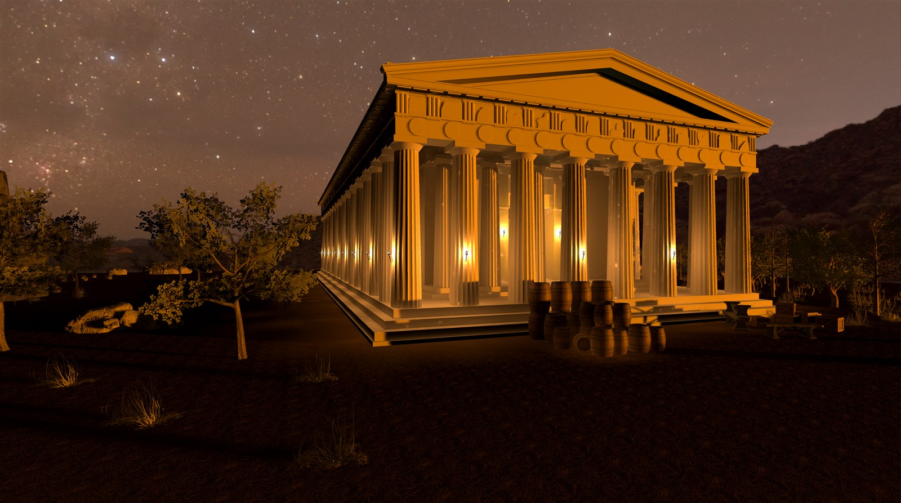
02 / Project overview
Architecture, revealed by light.
I developed the interior and exterior lighting for this nighttime environment in Unity 6 and URP. Warm architectural illumination establishes the temple as the focal point, while the darker landscape preserves contrast and a sense of depth.
My work covered lighting design and implementation, scene atmosphere, baked global illumination, lightmap configuration, and reflection probes.
The environment models and materials are pre-existing assets. My contribution is the lighting and its technical implementation; I did not create the original models, textures, or materials.
- Role
- Lighting Technical Artist
- Engine
- Unity 6
- Pipeline
- Universal Render Pipeline
- Technical focus
- Baked GI, directional lightmaps & reflection probes
03 / Cinematic showcase
A passage through the temple.
04 / Lighting design
Warmth, rhythm, and depth.
The visual hierarchy moves from an illuminated exterior to enclosed interior spaces. Repeated columns carry the light through each composition, while shadow separates the architecture from its surroundings.
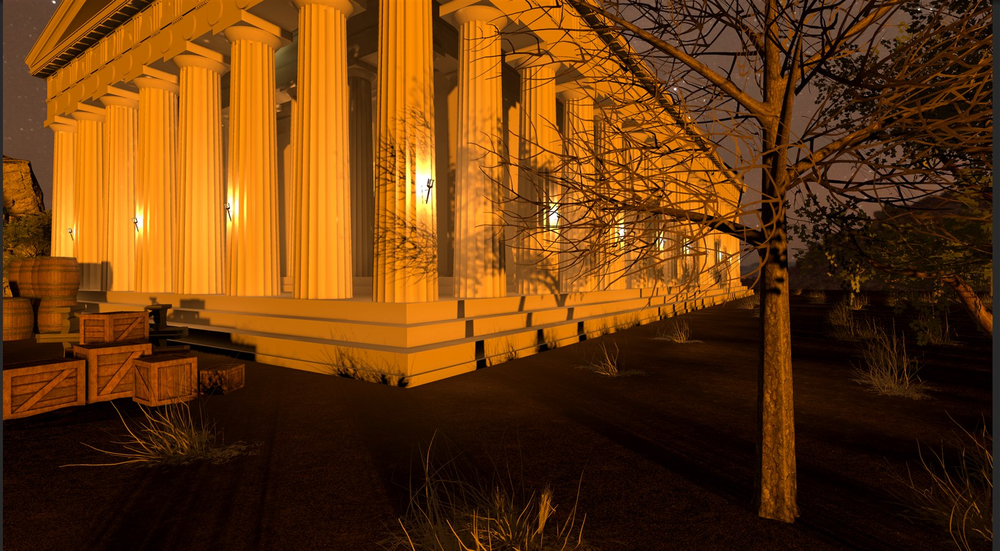
Exterior rhythm
The bright vertical structure reads against the night. The darker tree and ground give the illuminated architecture room to stand out.
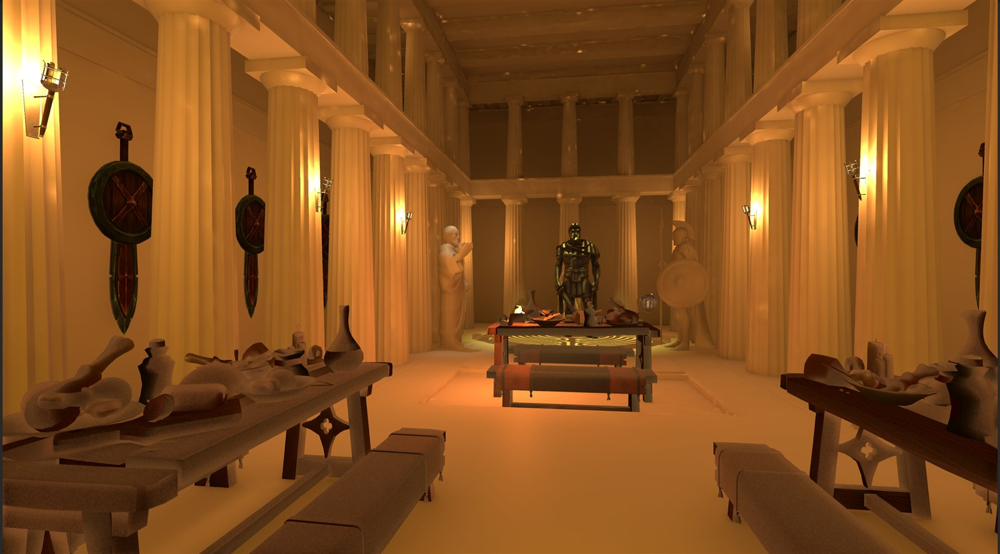
Interior continuity
Warm illumination continues inside. The receding columns, visible ceiling, and darker recesses establish depth without losing the enclosed character of the room.
05 / Technical breakdown
From composition to lighting data.
The final imagery is supported by a configured baked-lighting workflow and environment captures. These project screenshots document the setup and generated data.
A. Lighting setup
The artistic work establishes what the viewer notices: the lit facade, the rhythm of the columns, and the transition indoors. The technical work brings that composition into the Unity scene through lighting configuration, baking, and reflection capture.
The scene overview shows the environment alongside its hierarchy and a selected reflection probe. Multiple reflection probes and a Light Probe Group are present; the latter's detailed configuration is not documented here.
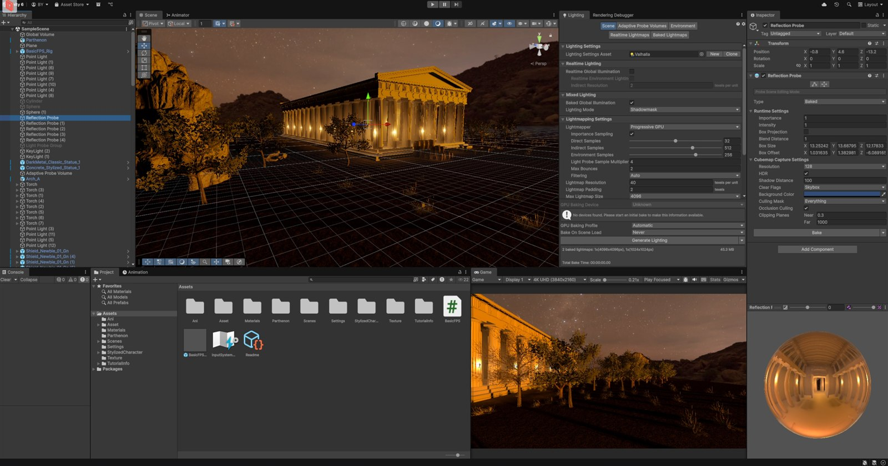
B. Baked GI & lightmaps
Baked Global Illumination is enabled and Realtime Global Illumination is disabled. The lighting configuration uses Shadowmask mixed lighting and directional lightmaps.
The project contains generated lighting data and two baked atlases, at 4096 × 4096 and 1024 × 1024. Unity reports approximately 45.3 MB of lightmap data.
- Mixed lighting
- Shadowmask
- Directional mode
- Directional
- Lightmap density
- 40 texels / unit
- Compression
- High Quality
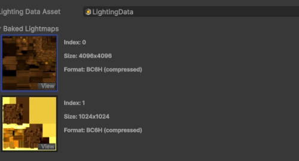
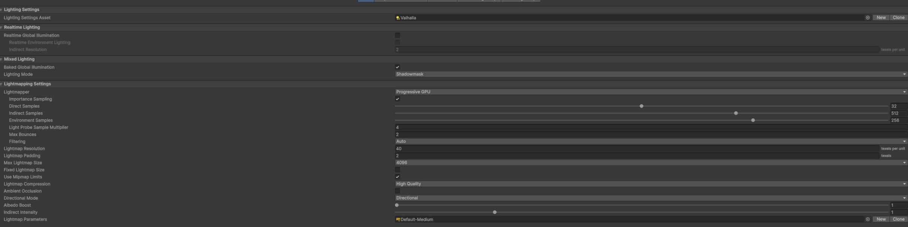
View the documented bake configuration
- Configured lightmapper
- Progressive GPU
- Direct / indirect samples
- 32 / 512
- Environment samples
- 256
- Maximum bounces
- 2
- Lightmap padding
- 2 texels
- Maximum atlas size
- 4096
These are the current settings shown in the project. The screenshots do not establish the hardware or lightmapper used for the original bake, or a measured bake duration.
C. Environment & reflection probes
The Environment panel documents the skybox and ambient configuration. Environment Lighting is set to Color; the environment-reflection source is Custom with no cubemap assigned in the shown slot.
Separate baked reflection probes capture the illuminated scene. The documented probe's preview shows the interior architecture and its warm lighting, providing a clear record of the captured environment.
- Probe type
- Baked
- Resolution
- 128
- HDR
- Enabled
- Clear flags
- Skybox
- Box projection
- Disabled
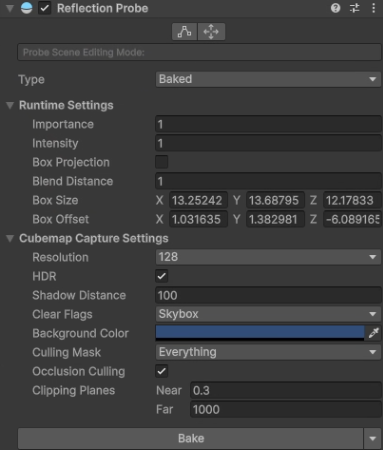
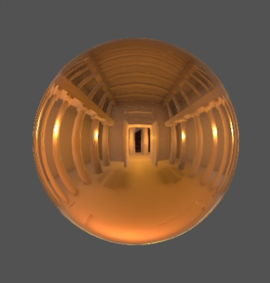
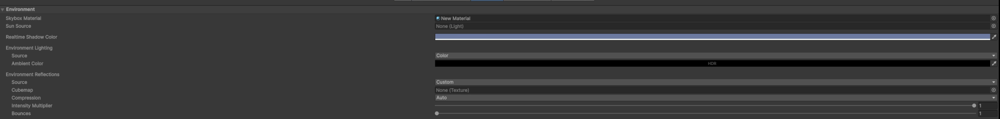
06 / Final renders
Across the threshold.
Additional views of the facade, interior alcove, and main hall. Select any image to inspect the original render.
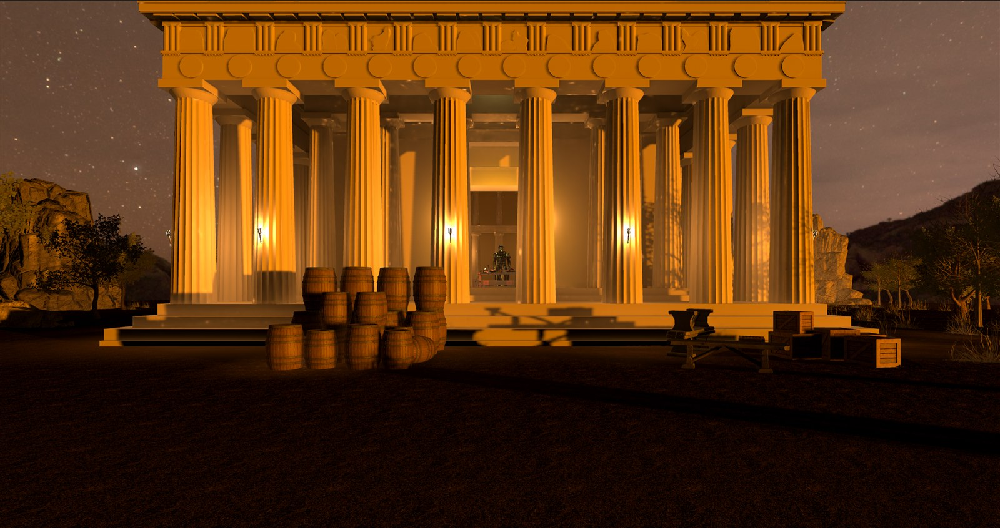
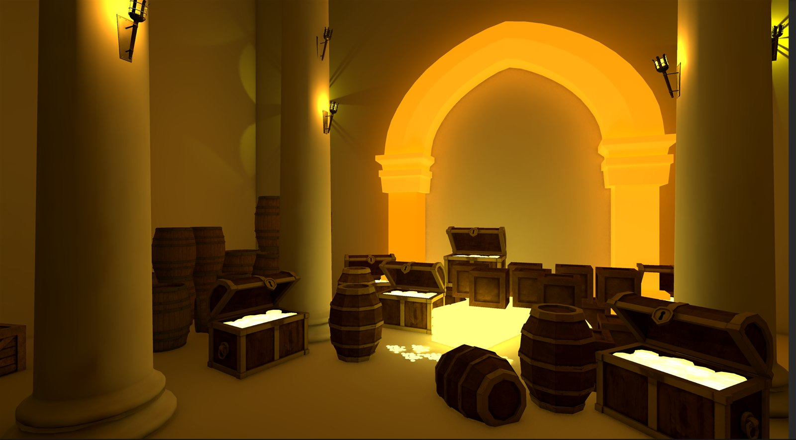
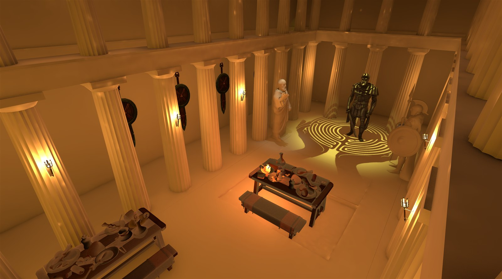